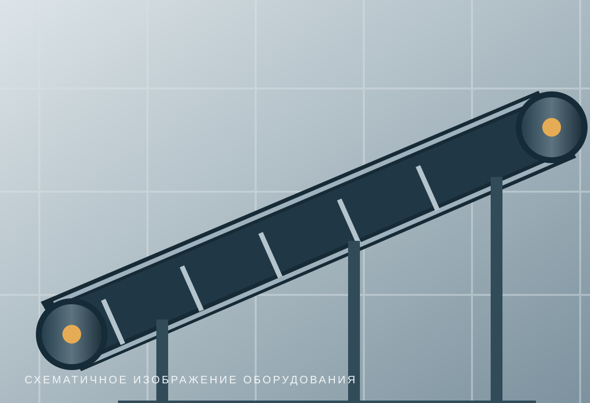
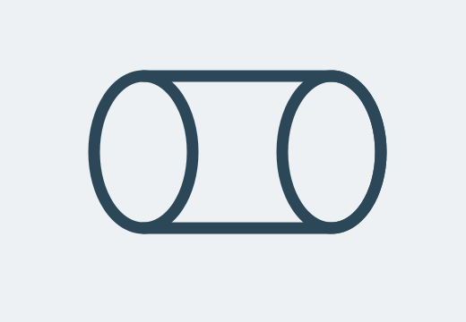
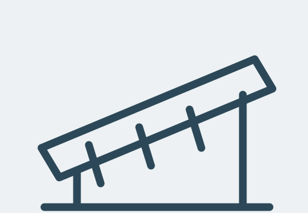
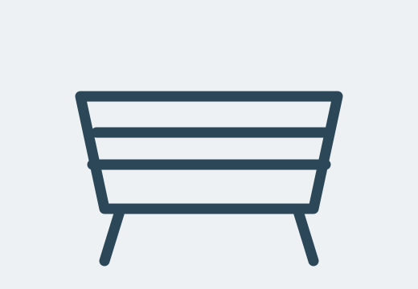
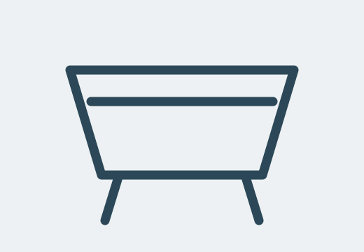
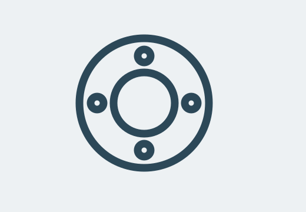

Ролики конвейерные
Комплектующие конвейерных систем.
Миасский завод специального оборудования
Конвейерное, дробильно-сортировочное оборудование и изготовление металлоизделий по чертежам заказчика.
Собственное производство в Миассе. Работаем с заказчиками по России и СНГ.
Позвонить на завод
ПРОМЫШЛЕННОЕ ОБОРУДОВАНИЕ / МЗСО01 / ПРЕДПРИЯТИЕ
Миасский завод специального оборудования — производственное предприятие с собственной площадкой в городе Миассе.
С 2024 года МЗСО занимается изготовлением горно-промышленного, конвейерного и дробильно-сортировочного оборудования, а также металлоизделий по чертежам заказчика. Сотрудничаем с горнодобывающими и другими промышленными предприятиями России и стран СНГ.
02 / НОМЕНКЛАТУРА
Производим оборудование и комплектующие для промышленных предприятий, а также металлоизделия по индивидуальным чертежам.
Комплектующие конвейерных систем.
Опорные элементы конвейерного оборудования.

Барабаны конвейерных систем.

Оборудование для транспортировки материалов.

Марки от ГИС-41 до ГИТ-64.

Промышленное питательное оборудование.

Фланцы, шестерёнки, муфты, подпятники, сегменты подпятников и другие изделия по чертежам заказчика.
03 / ПРОИЗВОДСТВО
Рассматриваем изготовление оборудования и широкого спектра металлоизделий по чертежам и техническим заданиям заказчика.
Работаем с индивидуальными производственными задачами, оказываем услуги по ремонту, восстановлению и модернизации промышленного оборудования.
Рассмотрим техническую документацию и возможность производства изделия.
Обсудим требования к изделию и условия изготовления.
Ремонт, восстановление и модернизация промышленного оборудования.
ГАРАНТИЙНЫЕ УСЛОВИЯ
* Гарантия на оборудование — не более 18 месяцев со дня отгрузки.
Работы по гарантийному обслуживанию проводятся нашими специалистами либо заводом-производителем — в зависимости от характера поломки и сложности ремонта.
Срок проведения работ — от 7 до 45 рабочих дней, в зависимости от сложности ремонта.
Для получения сведений о порядке гарантийного обслуживания и более подробной информации о гарантии на продукцию свяжитесь с нами.
04 / СВЯЗЬ
Обсудим вашу производственную задачу и возможность изготовления оборудования.